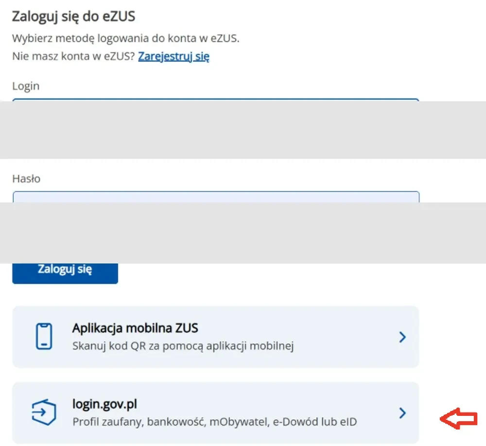
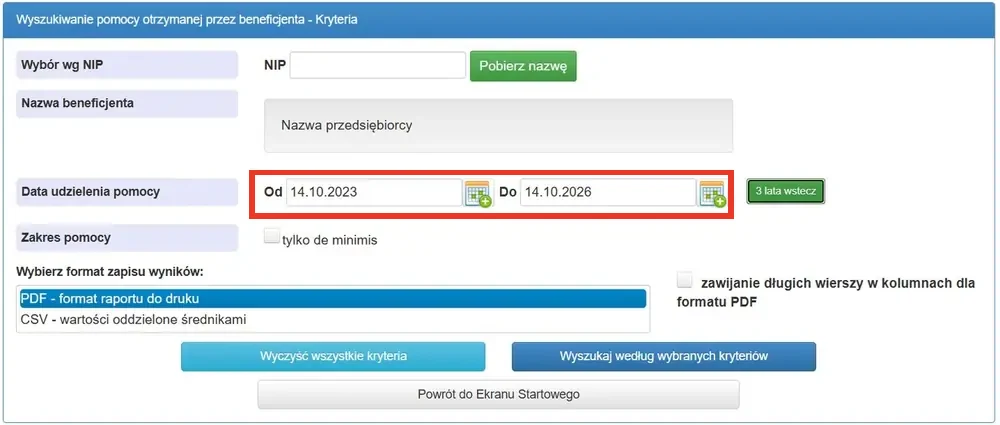
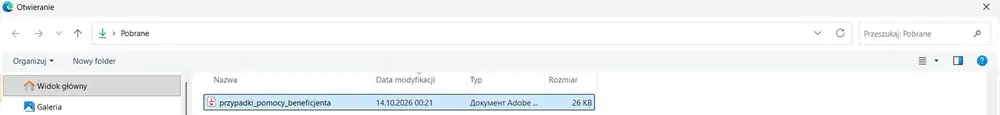
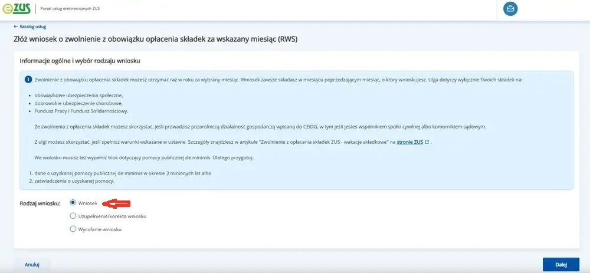
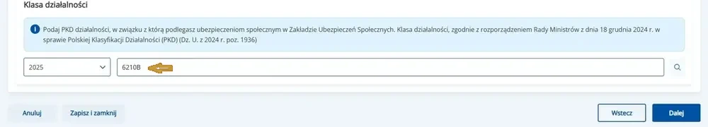
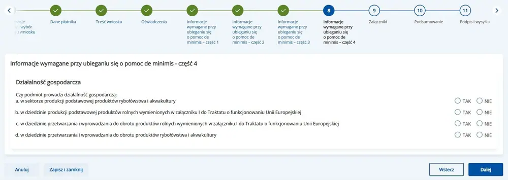

Wakacje składkowe: заявление RWS в eZUS
Один месяц без взносов на социальное страхование. Выберите свой случай – дальше пойдёте по экранам, ничего искать не нужно.
Содержание
Вход в eZUS
Экран: «Zaloguj do PUE/eZUS»
Открываем кабинет на zus.pl – дальше все экраны внутри него.
- На zus.pl нажать «Zaloguj do PUE/eZUS».
- Войти через Profil Zaufany или банк.
- В меню выбрать «Katalog usług» → «Wakacje składkowe».


Справка из SUDOP
Экран: «Wyszukiwanie podmiotu»
Нужна тем, кто уже получал помощь de minimis.
- Открыть SUDOP – поиск по NIP.
- Ввести NIP и нажать «Pobierz nazwę».
- Отметить «tylko de minimis» и период 3 года.


Отчёт в PDF
Экран: «Wyniki wyszukiwania»
Файл, который приложим к заявлению.
- Нажать «Wyszukaj według wybranych kryteriów».
- Выбрать PDF и сохранить файл.

Приложения
Экран: «Załączniki»
Здесь добавляем справку из SUDOP.
- Нажать на пунктирную зону загрузки.
- Выбрать сохранённый PDF.
- «Dalej».


Общие данные и вид заявления
Экран: «Informacje ogólne i wybór rodzaju wniosku»
Здесь выбираем, что именно подаём – RWS.
- Rodzaj wniosku: «Wniosek».
- Typ: «Zwolnienie z tytułu wakacji składkowych».
- Нажать «Dalej».


Данные плательщика
Экран: «Dane płatnika»
Данные подставятся сами – их нужно только сверить.
- Сверить NIP и адрес.
- Телефон можно не заполнять.
- «Dalej».

Месяц, за который подаём
Экран: «Miesiąc, za który składany jest wniosek»
Выбираем месяц, за который не платим взносы.
- Отметить один месяц.
- Проверить год.
- «Dalej».

Заявления-подтверждения
Экран: «Oświadczenia»
Три утверждения – без них заявление не пройдёт.
- Отметить все пункты.
- Прочитать, что подтверждаете.
- «Dalej».

Помощь de minimis – часть 1
Экран: «Pomoc de minimis»
Сколько помощи уже получили за 3 года.
- Вписать суммы в евро.
- Если помощи не было – 0,00.
- «Dalej».


Помощь de minimis – часть 2
Экран: «Pomoc de minimis»
Связанные фирмы. У большинства их нет.
- Если связей нет – везде «Nie».
- Если есть – вписать NIP.
- «Dalej».

Помощь de minimis – часть 3
Экран: «Pomoc de minimis»
Вопросы о виде деятельности.
- Ответить на каждый пункт.
- «Dalej».

Помощь de minimis – часть 4
Экран: «Pomoc de minimis»
Последняя часть анкеты.
- Проверить суммы.
- «Dalej».

Приложения
Экран: «Załączniki»
Если подаёте впервые – здесь пусто.
- Ничего не добавлять.
- «Dalej».

Сводка
Экран: «Podsumowanie»
Всё заявление на одном экране. Читаем и отправляем.
- Проверить месяц и суммы.
- Нажать «Podgląd i wyślij».

Подпись и UPO
Экран: «Podpis i UPO»
Подпись и подтверждение, что заявление ушло.
- Подписать через Profil Zaufany.
- Скачать UPO и сохранить.
Если экран выглядит иначе
Интерфейс eZUS иногда меняет подписи. Ориентируйтесь на смысл: шаг вперёд – синяя кнопка справа внизу, возврат – «Wstecz», сохранение – «Zapisz i zamknij».
Если появился экран, которого нет в инструкции, – сделайте скриншот и пришлите в бюро.
Прямые ссылки
- ZUS – вход в eZUSкнопка «Zaloguj do PUE/eZUS»
- Wakacje składkowe – правилаbiznes.gov.pl · ZUS
- SUDOP – справка de minimisсервис UOKiK, поиск по NIP
- Profil Zaufanyвход и подпись заявления
Что важно знать до начала
- Заявление подаётся в месяц, предшествующий месяцу каникул.
- Лимит помощи de minimis – 300 000 евро за три года.
- Если уже получали помощь de minimis, приложите справку из SUDOP: она подтверждает лимит 300 000 евро.